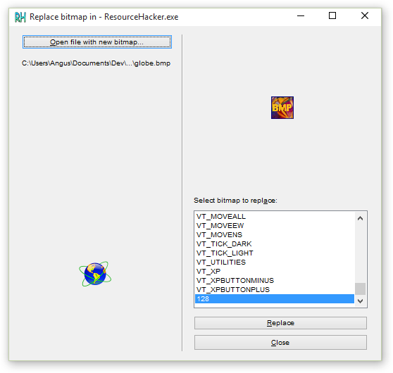

Resource Hacker™
Version 4.5.28Last updated: 25 November 2016
Copyright © 1999-2016 Angus Johnson
Freeware - no nags, no ads and fully functional.
Download
Overview:
Resource Hacker™ has been designed to be the complete resource editing tool: compiling, viewing, decompiling and recompiling resources for both 32bit and 64bit Windows executables. Resource Hacker™ can open any type of Windows executable (*.exe; *.dll; *.scr; *.mui etc) so that individual resources can be added modified or deleted within these files. Resource Hacker™ can create and compile resource script files (*.rc), and edit resource files (*.res) too.

Compiling:
Compiling can be initiated either by passing a resource script file as a parameter on the the command line (see below), or by using Resource Hacker's text editor.
Supported compiler directives include: #DEFINE, #UNDEF, #IF, #ELIF, #ELSE, #IFDEF, #IFNDEF, #INCLUDE, and #PRAGMA.
The #INCLUDE, #IF, and #IFDEF directives can all be nested to multiple levels.
Strings within resource statements are defined between double-quote (") characters. These strings can also contain typical 'C' style backslashed 'escaped' characters — \t , \n , \\ , \" , and \000 .. \377 (octal). A double-quote within a string can be 'escaped' by preceding it with either a backslash or with another double-quote character.
Script comments are preceded either by double forward-slashes (//) or by a semi-colon (;).
Filenames in within resource statements can only be parsed as strings, so they MUST be enclosed within double-quote characters otherwise compile errors will be raised.
A complete list of Resource-Definition Statements can be found here.

Viewing Resources:
Once a file has been opened, most resources will be displayed as either an image (or group of images) or as decompiled text:


However, some resource types will be displayed in both its compiled form (eg dialog or popup menu) and in its decompiled text format.

Some resource types can only be displayed as a dump of raw byte data:

Using the internal editor to modify text-based resources:
Dialog, menu, string-table, message-table, accelerators and Borland form resources can all be easily edited and recompiled using the internal resource editor.

Dialog controls can be visually resized and/or moved, with any changes being reflected in the resource script automatically. Conversion between screen pixels and dialog units is done automatically. Select a control by clicking it in the displayed dialog. Alternatively, the Tab or Shift-Tab keys can be used to select next or prior controls respectively. The selected control will show resizing handles. To move a control without resizing, once the control has been selected, click and drag it to its new location. The arrow keys can also be used to move a control once it has been selected. A control can be resized by clicking and dragging one of its resizing handles. Alternatively, the arrow keys combined with the shift key can be used to resize a control.
The Dialog Editor can be opened from the popup menu which is displayed by right-clicking the preview dialog. The Control Editor can be opened from the same menu once a control has been selected.


New controls can also be added. The Control Editor supports almost all of Microsoft’s standard and common control classes. User defined custom classes can also be added to the predefined list of classes by carefully editing the “Dialog.def” text file which can be found in the same folder as Resource Hacker™. Toolbar buttons enable selection of the most commonly used controls. The top-left corner of the control to be added will default to the point at which the dialog was originally right-clicked.
Replacing Images:
If the resource item to be replaced is an icon, cursor, or bitmap, the source can be an *.ico, *.cur or *.bmp file respectively or selected from a *.res or another *.exe file. Select Action|Replace Icon (Cursor or Bitmap) from the menu.

Command Line Syntax:
Just about all the functionality of Resource Hacker™ can be accessed from the command line without having to open the Resource Hacker™ GUI.
Command line instructions and Resource Hacker™ scripts can remove the drudgery entailed with repeating Resource Hacker™ tasks.
Commandline instructions are a combination of switch statements followed by switch parameters as explained in the following table:
Command line statements:
Notes:
Batch file Examples:
Resource Hacker™ Scripts:| Switch | Parameter |
|---|---|
| -open | filename - the name of the file that is to be modified. It should be a Windows PE file (*.exe, *.dll etc) or a compiled or uncompiled resouce file (*.res or *.rc) |
| -save | filename - the new name of the modified or newly created file, either a modified opened file or an extracted resource |
| -resource | filename - contains a resource being added to the opened file. |
| -action | action to be performed on the opened file
|
| -mask | resource mask - Type,Name,Language commas are mandatory but each of Type, Name & Language are optional |
| -log | Filename or CONSOLE or NUL CONSOLE can be abbreviated to CON Logs the details of the operation performed If this switch is omitted, the log will be written to resourcehacker.log |
| -script | filename - contains a multi-command script, NOT a resource script for more info: -help script |
| -help | options - commandline or script (always logged to CONSOLE) other switches are ignored. |
Notes:
- Switch identifiers (except -script) may be abbreviated down to a single char (eg -res or -r).
- Switch instructions do not have to be in any particular order.
- File names that contain spaces must be enclosed within double quotes.
Batch file Examples:
reshack_help.bat:
ResourceHacker.exe -help @pause :: so we can see the console output before the CMD window closes. reshack_compile_res_script.bat: ResourceHacker.exe -open resources.rc -save resources.res -action compile -log NUL reshack_add_icon_to_old.bat: ResourceHacker.exe -open ".\In\old.exe" -save ".\Out\new.exe" -action addskip -res ".\In\missing.ico" -mask ICONGROUP,MAINICON, reshack_extract_icon_from_source.bat: ResourceHacker.exe -open source.exe -save savedicon.ico -action extract -mask ICONGROUP,MAINICON, -log CONSOLE @pause reshack_extract_all_icons_from_source.bat: ResourceHacker.exe -open source.exe -save savedicons.rc -action extract -mask ICONGROUP,, -log savedicons.log reshack_execute_my_script.bat: ResourceHacker.exe -script myscript.txt |
Resource Hacker™ Scripts are executed from the commandline using the following syntax:
ResourceHacker.exe -script ScriptFile |
Resource Hacker™ Scripts are text files with the following format://comments are preceded by double slashes [FILENAMES] Open= Save= Log= [COMMANDS] //one or more of the following commands ... -add SourceFile, ResourceMask -addskip SourceFile, ResourceMask -addoverwrite SourceFile, ResourceMask -addoverwrite SourceFile, ResourceMask -modify SourceFile, ResourceMask -extract TargetFile, ResourceMask -delete ResourceMask Note: Filenames that include spaces must be enclosed within double quotes. Resource Hacker™ Script examples: rh_script_myprog_rus.txt - //This script deletes all Language Neutral (0) //string-table, menu and dialog resource items //in MyProg.exe before replacing them //with Russian (1049) items... [FILENAMES] Exe= MyProg.exe SaveAs= MyProg_Rus.exe Log= MyProg_Rus.log [COMMANDS] -delete MENU,,0 -delete DIALOG,,0 -delete STRINGTABLE,,0 -add MyProg_Rus.res, MENU,,1049 -add MyProg_Rus.res, DIALOG,,1049 -add MyProg_Rus.res, STRINGTABLE,,1049 rh_script_myprog_upd_images.txt - //This script updates 2 bitmaps and an //icon in MyProg.exe ... [FILENAMES] Exe= MyProg.exe SaveAs= MyProg_Updated.exe [COMMANDS] -addoverwrite Bitmap128.bmp, BITMAP,128, -addoverwrite Bitmap129.bmp, BITMAP,129,0 -addoverwrite MainIcon.ico, ICONGROUP,MAINICON,0 rh_script_myprog_upd_all.txt - //This script replaces all resources //in MyProg.exe with all the resources //in MyProgNew.res [FILENAMES] Exe= MyProg.exe SaveAs= MyProg_Updated.exe [COMMANDS] -delete ,,, //delete all resources before... -add MyProgNew.res ,,, //adding all the new resources |
This Resource HackerTM software is released as freeware provided that you agree to the following terms and conditions:
|
| The above licence terms constitute "copyright management information" within the meaning of Section 1202 of Title 17 of the United States Code and must not be altered or removed from the licensed works. Their alteration or removal from the licensed works, and the distribution of licensed works without all the above licence terms in an unaltered way, may contravene Section 1202 and give rise civil and/or criminal consequences. |
Executable Packers
| Some executable files are "packed" or "compressed" using compression algorithms after they have been compiled. While this reduces the size of these files, it also makes it more difficult to view and modify resources. While it's possilbe to reverse any compression and still view and modify resources, I've decided not to do that on the assumption that that would be disrespecting the intentions of the file authors. When a "compressed" executable is opened with Resource HackerTM only the types and names of resource will be visible. |
Download
- Setup executable (2.8MB)
- 'Portable' Zip file (3.1MB)